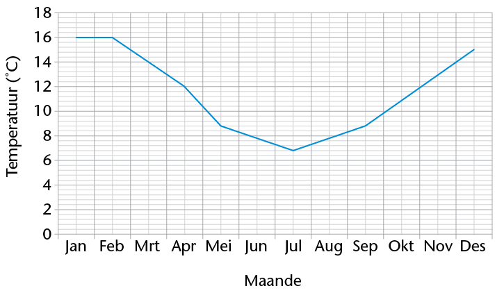
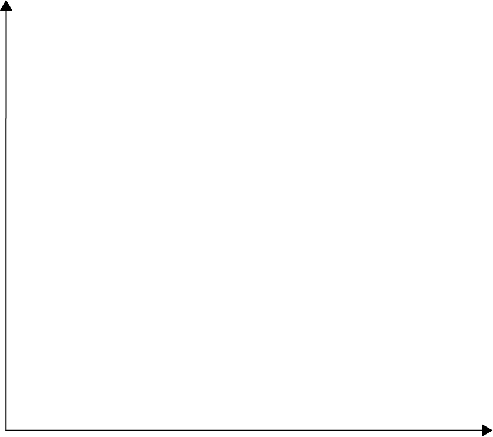
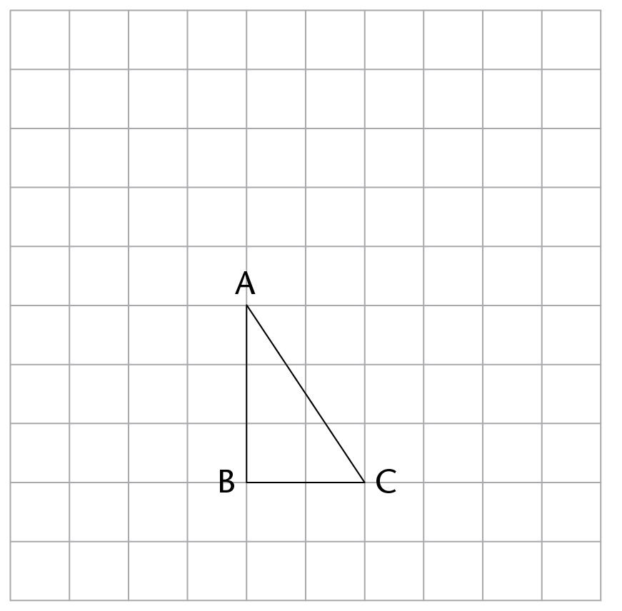
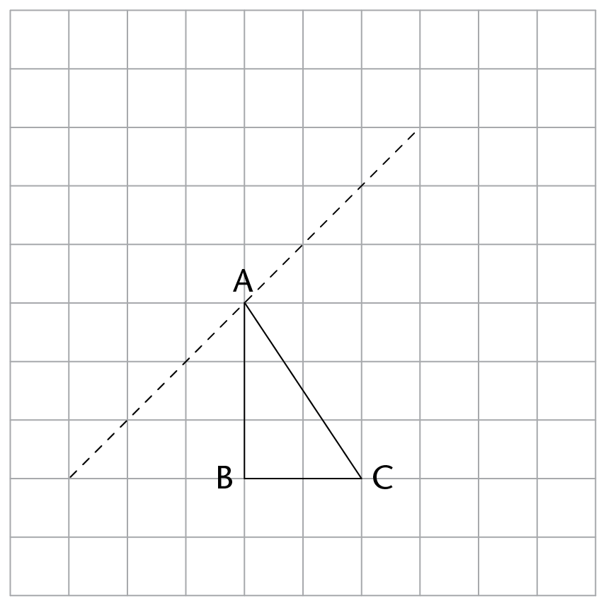
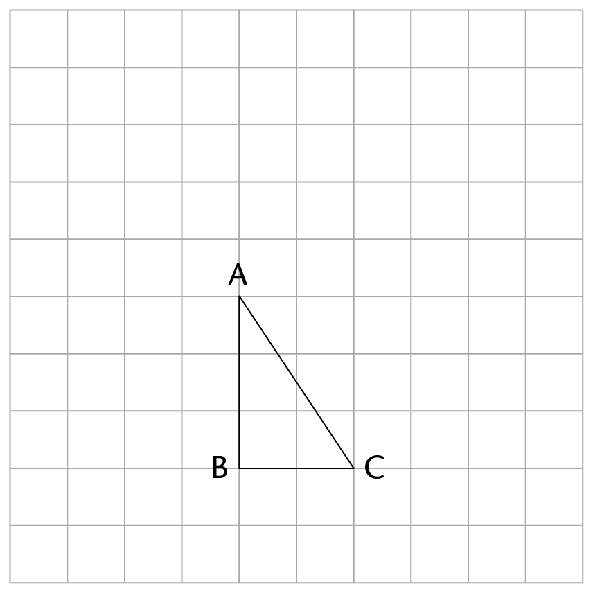
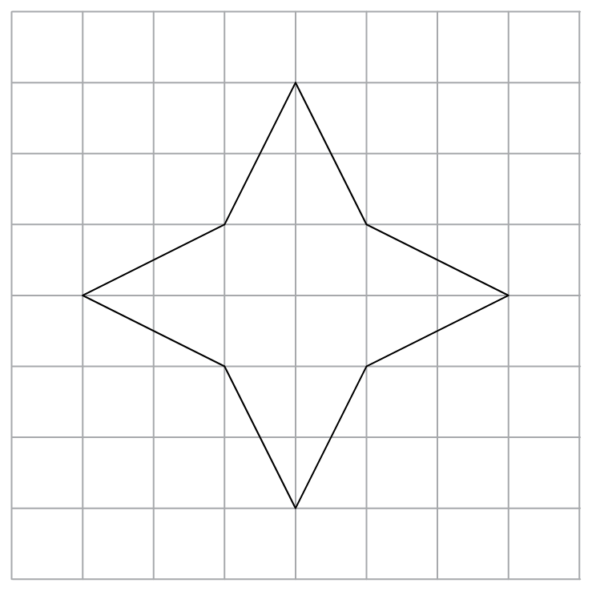

<div class="container">
  <div id="contents" class="col-md-12 main-content"><h1 xmlns="http://www.w3.org/1999/xhtml" lang="en-US" id="toc-id-33">Assessering</h1>

    <p xmlns="http://www.w3.org/1999/xhtml" class="Body-no-indent" lang="en-US">In
    hierdie afdeling dui die getalle in hakies aan die einde van ’n
    vraag die puntetelling aan wat die vraag werd is. Gebruik die
    inligting om vir jou te help besluit hoeveel werk nodig is. Die
    totale getal punte wat aan die assessering toegeken is, is
    50.</p>

    <p xmlns="http://www.w3.org/1999/xhtml" class="Body-investigation-hanging" lang="en-US">1.	Vir elk van die volgende rye, (i) beskryf die
    verband tussen die terme in die ry in woorde, en (ii) gebruik
    die verband om die volgende 3 terme in die ry neer te
    skryf:</p>

    <p xmlns="http://www.w3.org/1999/xhtml" class="ques-a--with-marks" lang="en-US">
    (a)	28,3; 31,1; 33,9; ...																</p>

<hr xmlns="http://www.w3.org/1999/xhtml"/>
<p xmlns="http://www.w3.org/1999/xhtml" class="ques-a--with-marks" lang="en-US">
    (b) \(\frac{2}{5}; \frac{6}{5}; \frac{18}{5}\)    </p>

<hr xmlns="http://www.w3.org/1999/xhtml"/>
<p xmlns="http://www.w3.org/1999/xhtml" class="ques-a--with-marks" lang="en-US">
    2.	(a)	Vul die ontbrekende waardes in die tabel
    in.										</p>

    <table xmlns="http://www.w3.org/1999/xhtml" id="table-77" class="No-Table-Style"><colgroup><col class="Row-Column-29"/><col class="Row-Column-396"/><col class="Row-Column-396"/><col class="Row-Column-396"/><col class="Row-Column-396"/><col class="Row-Column-396"/><col class="Row-Column-396"/></colgroup><tbody><tr class="Row-Column-31"><td class="cell-style-override-3">
            <p class="Table-text-left">Termnommer</p>
          </td>

          <td class="cell-style-override-3">
            <p class="Table-text-centred">1</p>
          </td>

          <td class="cell-style-override-3">
            <p class="Table-text-centred">2</p>
          </td>

          <td class="cell-style-override-3">
            <p class="Table-text-centred">3</p>
          </td>

          <td class="cell-style-override-3">
            <p class="Table-text-centred">4</p>
          </td>

          <td class="cell-style-override-3">
            <p class="Table-text-centred">7</p>
          </td>

          <td class="cell-style-override-3">
            </td>
        </tr><tr class="Row-Column-31"><td class="cell-style-override-3">
            <p class="Table-text-left">Waarde van die term</p>
          </td>

          <td class="cell-style-override-3">
            <p class="Table-text-centred">0</p>
          </td>

          <td class="cell-style-override-3">
            <p class="Table-text-centred">3</p>
          </td>

          <td class="cell-style-override-3">
            <p class="Table-text-centred">8</p>
          </td>

          <td class="cell-style-override-3">
            <p class="Table-text-centred">15</p>
          </td>

          <td class="cell-style-override-3">
            </td>

          <td class="cell-style-override-3">
            <p class="Table-text-centred">143</p>
          </td>
        </tr></tbody></table><p xmlns="http://www.w3.org/1999/xhtml" class="ques-a--with-marks" lang="en-US">
    (b)	Beskryf in woorde die reël waarmee jy enige term in die ry
    wat in die tabel
    gewys is, sou kon bepaal.															</p>

    <hr xmlns="http://www.w3.org/1999/xhtml"/>
<p xmlns="http://www.w3.org/1999/xhtml" class="ques-a-" lang="en-US">3.	(a)	As
    \(a = b^3 -
 (2c^2 + 8)\), wat is die
    waarde van \(a\)
    as \(b
    = 5\) en \(c  = -4\)?</p>

<hr xmlns="http://www.w3.org/1999/xhtml"/>
<p xmlns="http://www.w3.org/1999/xhtml" class="ques-a--with-marks" lang="en-US">
    (b)	Gebruik die formule \(p = \frac{4s-a^2}{t}\)  om die waarde van \(t\)  te bereken as \(p  = 36\),
    \(s  = 45\) en \(a  = 6\).</p>

<hr xmlns="http://www.w3.org/1999/xhtml"/>
<p xmlns="http://www.w3.org/1999/xhtml" class="Body-investigation" lang="en-US">
    4.	’n Sokkerbal kos \(x\)  rand. Skryf neer in terme van
    \(x\)  wat die koste van
    die volgende is:</p>

    <p xmlns="http://www.w3.org/1999/xhtml" class="ques-a--2-space-below">(a)	vyf sokkerballe</p>

    <hr xmlns="http://www.w3.org/1999/xhtml"/>
<p xmlns="http://www.w3.org/1999/xhtml" class="ques-a--2-space-below">(b)	’n rugbybal wat twee keer
    soveel as ’n sokkerbal kos</p>

    <hr xmlns="http://www.w3.org/1999/xhtml"/>
<p xmlns="http://www.w3.org/1999/xhtml" class="ques-a--2-space-below">(c)	’n rok wat R150 meer as ’n
    sokkerbal kos</p>

    <hr xmlns="http://www.w3.org/1999/xhtml"/>
<p xmlns="http://www.w3.org/1999/xhtml" class="ques-a--2-space-below">(d)	drie sokkerballe en ’n
    rok</p>

    <hr xmlns="http://www.w3.org/1999/xhtml"/>
<p xmlns="http://www.w3.org/1999/xhtml" class="ques-a--2-space-below"/>

    <p xmlns="http://www.w3.org/1999/xhtml" class="Body-investigation" lang="en-US">
    5.	Los op vir \(x\) :</p>

    <p xmlns="http://www.w3.org/1999/xhtml" class="ques-a--3-columns" lang="en-US">
    (a) \(x + 18 =     52 \) </p>
<p xmlns="http://www.w3.org/1999/xhtml">(b)  \(5x =
    60\)  </p><hr xmlns="http://www.w3.org/1999/xhtml"/>
    <p xmlns="http://www.w3.org/1999/xhtml">(c)  \( \frac{x}{3} = 12\)    </p><hr xmlns="http://www.w3.org/1999/xhtml"/>

    <p xmlns="http://www.w3.org/1999/xhtml" class="Body-investigation-with-marks" lang="en-US">6.	Vir jou word gegee dat 2\(x\)  + 8 = 15. Skryf die waarde van
    2\(x\)  + 10
    neer.	</p>

<hr xmlns="http://www.w3.org/1999/xhtml"/>
<p xmlns="http://www.w3.org/1999/xhtml" class="Body-investigation-hanging" lang="en-US">7.	Bestudeer die volgende grafiek, wat die gemiddelde
    minimum temperature in Kaapstad wys, en beantwoord die vrae wat
    volg:</p>

    <p xmlns="http://www.w3.org/1999/xhtml" class="ques-a-" lang="en-US">
     </p>

    <p xmlns="http://www.w3.org/1999/xhtml" class="ques-a--with-marks" lang="en-US">
    (a)	Beskryf die tendens (d.w.s. die neiging) in die minimum
    temperature van Julie
    tot Desember.																		</p>

    <hr xmlns="http://www.w3.org/1999/xhtml"/>
<p xmlns="http://www.w3.org/1999/xhtml" class="ques-a--with-marks" lang="en-US">
    (b)	Watter maand het die laagste minimum temperatuur in
    Kaapstad, en wat is
    die gemiddelde minimum temperatuur in hierdie
    maand?						</p>

    <hr xmlns="http://www.w3.org/1999/xhtml"/>
<p xmlns="http://www.w3.org/1999/xhtml" class="ques-a--with-marks" lang="en-US">
    (c)	Skryf die name neer van die maande wat die hoogste minimum
    temperatuur
    in Kaapstad het en hulle gemiddelde minimum
    temperatuur.					</p>

    <hr xmlns="http://www.w3.org/1999/xhtml"/>
<p xmlns="http://www.w3.org/1999/xhtml" class="Body-investigation-hanging" lang="en-US">8.	Trek grafieke wat pas by elk van die volgende
    beskrywings. Benoem die asse. Geen waardes hoef op die asse
    gewys te word nie.</p>
            <p xmlns="http://www.w3.org/1999/xhtml" class="ques-a- para-style-override-52" lang="en-US">(a)  ’n Grafiek van die totale
            koste van
            verskillende massas bredievleis </p>
 <div xmlns="http://www.w3.org/1999/xhtml" class="frame-13"></div>
            <p xmlns="http://www.w3.org/1999/xhtml" class="ques-a- para-style-override-52" lang="en-US">(b)  ’n Spoed-tyd grafiek vir ’n
            voertuig wat versnel </p>
      <div xmlns="http://www.w3.org/1999/xhtml" class="frame-13"></div>


    
    <p xmlns="http://www.w3.org/1999/xhtml" class="Body-investigation-hanging" lang="en-US">9.	Pas die transformasie wat beskryf is toe op figuur
    ABC en merk die beeld se
    hoekpunte A' ,
    B'  en C' :</p>

    <p xmlns="http://www.w3.org/1999/xhtml" class="ques-a--with-marks" lang="en-US">
    (a)	Translasie van 3 eenhede regs en 2 eenhede
    opwaarts								</p>

    <p xmlns="http://www.w3.org/1999/xhtml" class="Body-investigation para-style-override-1" lang="en-US"></p>

    <p xmlns="http://www.w3.org/1999/xhtml" class="ques-a--with-marks" lang="en-US">
    (b)	Refleksie in die stippellyn															</p>

    <p xmlns="http://www.w3.org/1999/xhtml" class="Body-no-indent" lang="en-US">
     </p>


    <p xmlns="http://www.w3.org/1999/xhtml" class="ques-a--with-marks" lang="en-US">
    (c)	Rotasie van 90° kloksgewys rondom hoekpunt
    C									</p>

    <p xmlns="http://www.w3.org/1999/xhtml" class="Body-no-indent para-style-override-1" lang="en-US"></p>

    <p xmlns="http://www.w3.org/1999/xhtml" class="ques-a--with-marks" lang="en-US">
    10.	(a)	Teken al die simmetrie-asse in (gebruik stippellyne) op
    die volgende figuur:		</p>

    <p xmlns="http://www.w3.org/1999/xhtml" class="ques-a--with-marks" lang="en-US">
    </p>
    <p xmlns="http://www.w3.org/1999/xhtml">(b)	Voeg een lyn, van een kant van die figuur na die ander
    kant, by elk van die
    volgende diagramme, sodat elke figuur die volgende sal hê:</p>

    <p xmlns="http://www.w3.org/1999/xhtml" class="ques-a--with-marks" lang="en-US">
    (i)	presies een simmetrie-as														</p>

 <p xmlns="http://www.w3.org/1999/xhtml" class="ques-a--with-marks" lang="en-US">
    </p>
    <p xmlns="http://www.w3.org/1999/xhtml">(ii)	geen simmetrie-asse 															</p>

    <p xmlns="http://www.w3.org/1999/xhtml" class="ques-a--with-marks" lang="en-US">
     </p>

    <p xmlns="http://www.w3.org/1999/xhtml" class="ques-a--with-marks" lang="en-US">
    11.	Voltooi die tabel.																		</p>

    <table xmlns="http://www.w3.org/1999/xhtml" id="table-79" class="No-Table-Style"><colgroup><col class="Row-Column-405"/><col class="Row-Column-406"/><col class="Row-Column-406"/><col class="Row-Column-406"/></colgroup><tbody><tr class="Row-Column-31"><td class="cell-style-override-3">
            </td>

          <td class="cell-style-override-3">
            <p class="Table-header-centred" lang="en-US"><b>Getal vlakke</b></p>
          </td>

          <td class="cell-style-override-3">
            <p class="Table-header-centred" lang="en-US"><b>Getal hoekpunte</b></p>
          </td>

          <td class="cell-style-override-3">
            <p class="Table-header-centred" lang="en-US"><b>Getal rande</b></p>
          </td>
        </tr><tr class="Row-Column-31"><td class="cell-style-override-3">
            <p class="Table-text-left">Kubus</p>
          </td>

          <td class="cell-style-override-3">
            </td>

          <td class="cell-style-override-3">
            </td>

          <td class="cell-style-override-3">
            </td>
        </tr><tr class="Row-Column-407"><td class="cell-style-override-3">
            <p class="Table-text-left">Vierkantige piramide</p>
          </td>

          <td class="cell-style-override-3">
            </td>

          <td class="cell-style-override-3">
            </td>

          <td class="cell-style-override-3">
            </td>
        </tr></tbody></table><p xmlns="http://www.w3.org/1999/xhtml" class="ques-a--with-marks" lang="en-US">
    12.	(a)	Teken ’n net vir ’n kubus waarvan die vlakke se
    sylengte 2 eenhede is op die
    rooster hier onder.																	</p>

    <p xmlns="http://www.w3.org/1999/xhtml" class="Body-no-indent" lang="en-US">
     </p>

    <p xmlns="http://www.w3.org/1999/xhtml" class="ques-a--with-marks" lang="en-US">
    (b)	Teken ’n heeltemal verskillende net vir dieselfde kubus op
    die rooster hier
    onder. Dit behoort byvoorbeeld nie bloot ’n rotasie of
    refleksie van die een
    wat jy vir vraag (a) geteken het, te wees nie.										</p>

    <p xmlns="http://www.w3.org/1999/xhtml" class="ques-a--with-marks" lang="en-US">
     </p>

    
  </div>
</div>